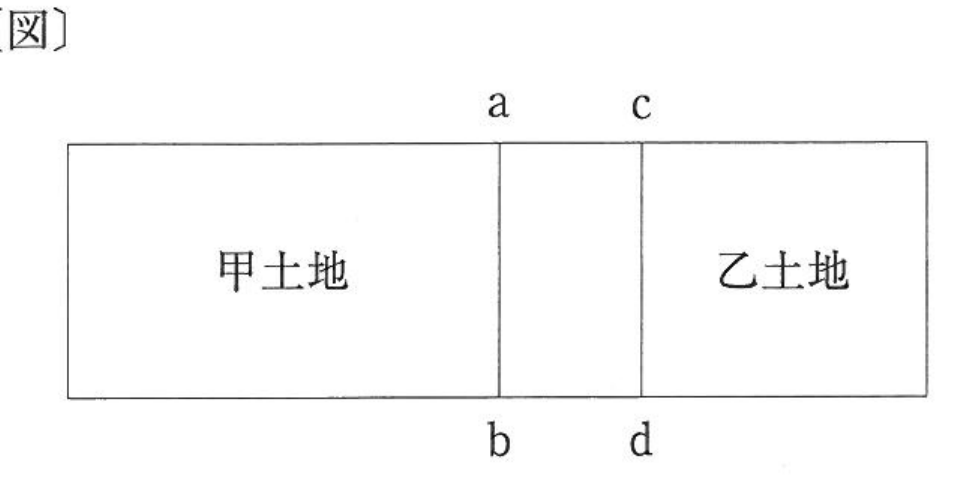

問題文・条件
下図のような甲土地及び乙土地の所有権の及ぶ範囲（本問において「所有権界」という。）又は筆界に関する。
肢 ア
H23-9-ア
甲土地と乙土地との筆界がa-bである場合において、甲土地の所有者Aと乙土地の所有者Bが所有権界及び筆界をともにc-dとするとの合意をしたときは、所有権界及び筆界は、c-dとなる。

〔図〕
解答：×
所有権界は合意で動くが、筆界は当事者の合意では動かない。
筆界が生じ、又は動くのは、分筆・合筆の登記や換地処分等の登記による場合に限られる。当事者の合意、時効取得、売買、官民境界確定協議によって筆界が動くとする規定はない。
筆界は123条1号のとおり、その土地が登記された時に境を構成するものとされた線である。過去に定まっているもので、後からAとBが合意しても別の位置に動かせない。合意で動くのは、当事者が処分できる所有権の範囲（所有権界）のほうである。
根拠法123条1号
出典：法務省 平成23年度 土地家屋調査士試験を加工して作成
肢 イ
H23-9-イ
甲土地と乙土地との所有権界及び筆界がいずれもa-bである場合において、甲土地の所有者Aと乙土地の所有者Bがともに所有権界及び筆界をc-dと認識したまま、その後Aがabdcaで囲まれた土地を時効取得したときは、甲土地と乙土地との所有権界及び筆界は、c-dとなる。
〔図〕
解答：×
時効取得で動くのは所有権界。筆界はa-bのまま。
筆界が生じ、又は動くのは、分筆・合筆の登記や換地処分等の登記による場合に限られる。当事者の合意、時効取得、売買、官民境界確定協議によって筆界が動くとする規定はない。
Aがabdcaの部分を時効取得すれば、その部分の所有権はAに移り、所有権界はc-dになる。しかし筆界は登記された時に定まった線で、占有や時効で動くものではない。乙土地からabdcaを分筆してAへ所有権の移転の登記をすることで、登記を現況に合わせる。
根拠法123条1号
出典：法務省 平成23年度 土地家屋調査士試験を加工して作成
肢 ウ
H23-9-ウ
甲土地と乙土地との所有権界及び筆界がいずれもa-bである場合において、所有権界及び筆界がc-dであると信じてabdcaで囲まれた土地を占有している甲土地の所有者Aから、所有権界及び筆界はc-dであるとの説明を受け、第三者がそれを信じて購入したときは、甲土地と乙土地との所有権界及び筆界は、c-dとなる。
〔図〕
解答：×
売主の説明を信じて買っても、筆界は動かない。所有権界も、Aが持たない部分は移らない。
筆界が生じ、又は動くのは、分筆・合筆の登記や換地処分等の登記による場合に限られる。当事者の合意、時効取得、売買、官民境界確定協議によって筆界が動くとする規定はない。
第三者が甲土地を買って承継するのは、Aが持つ範囲の所有権にとどまる。abdcaはBの所有のままだから、所有権界はa-bのままである。筆界も、売買や当事者の認識で動くものではない。どちらもc-dにはならない。
根拠法123条1号
出典：法務省 平成23年度 土地家屋調査士試験を加工して作成
肢 エ
H23-9-エ
乙土地の所有者が国である場合において、甲土地と乙土地との筆界がa-bであるときに、甲土地の所有者Aと国との間で、境界をc-dと定める国有財産法上の官民境界確定協議の契約が調った場合には、所有権界と筆界は異なることになる。
〔図〕
解答：○
官民境界確定協議で定まるのは所有権界。筆界はa-bのままなので、両者は食い違う。
筆界が生じ、又は動くのは、分筆・合筆の登記や換地処分等の登記による場合に限られる。当事者の合意、時効取得、売買、官民境界確定協議によって筆界が動くとする規定はない。
国有財産法上の官民境界確定協議は、国と隣接地の所有者との間で境界を確認する契約であり、当事者が処分できる所有権の範囲を定めるものである。筆界は登記された時に定まった線で、契約によって動かない。契約でc-dと定めても筆界はa-bのままだから、所有権界と筆界は異なることになる。
根拠法123条1号
出典：法務省 平成23年度 土地家屋調査士試験を加工して作成
肢 オ
H23-9-オ
筆界確定訴訟において、甲土地と乙土地との筆界をa-bとする確定判決があった場合であっても、甲土地の所有者Aと乙土地の所有者Bは、甲土地と乙土地との所有権界をc-dとする合意をすることができる。
〔図〕
解答：○
判決で確定するのは筆界。所有権界は当事者が合意で決められる。
筆界が生じ、又は動くのは、分筆・合筆の登記や換地処分等の登記による場合に限られる。当事者の合意、時効取得、売買、官民境界確定協議によって筆界が動くとする規定はない。
筆界確定訴訟の判決は、公法上の筆界がa-bであることを確定するもので、所有権の範囲を定めるものではない。所有権の範囲は取引や合意で動くから、判決の後でもAとBが所有権界をc-dとする合意をすることは妨げられない。135条2項が、筆界特定は所有権の境界の特定を目的とするものではないとしているのも、筆界と所有権の範囲を別のものとして扱う同じ区別である。
根拠法123条1号法135条2項
出典：法務省 平成23年度 土地家屋調査士試験を加工して作成